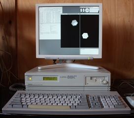

|
OpenBSD/luna88k is an effort to port OpenBSD to the OMRON LUNA-88K and LUNA-88K2 workstations. A mailing list for m88k-based ports is available at m88k@openbsd.org. To join the OpenBSD/m88k mailing list, send a message body of "subscribe m88k" to majordomo@openbsd.org. Please be sure to check our mailing list policy before subscribing. |  |
The LUNA workstation family was manufactured by OMRON corporation in the early 1990s. After several models based upon the Motorola 680x0 family, the last designs were multiprocessor systems based upon the Motorola 88100 processor.
Kenji Aoyama wanted to run a modern operating system on his LUNA-88K2 and eventually got tired of waiting for someone else to do this effort, so he started to merge the NetBSD/luna68k device support with the OpenBSD/mvme88k hardware support in January 2002. His efforts were eventually successful and his machine booted multi-user near the end of 2003.
Both LUNA-88K and LUNA-88K2 models are supported, and will boot multi-user. Most of the on-board devices are supported.
The latest supported OpenBSD/luna88k release is OpenBSD 6.7. Here are the OpenBSD/luna88k installation instructions.
Snapshots are made available from time to time, in this location as well as on a few mirrors. Here are the OpenBSD/luna88k snapshot installation instructions as well.
{kind=link}